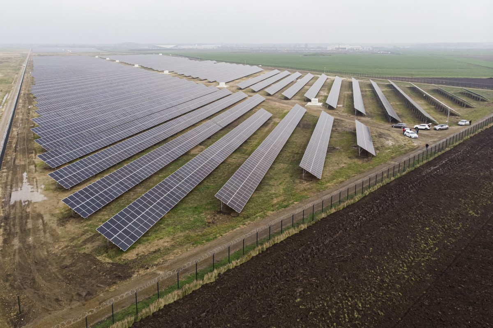

Fenntartható energiagazdálkodás Debrecenben
🔌 Miért fontos az energiatudatosság?
Debrecen energiaigénye évről évre nő a lakosság, az ipari parkok és az infrastruktúra fejlődésével együtt. A hatékony és környezetbarát energiagazdálkodás nemcsak a klímaváltozás elleni harc része, hanem gazdasági és társadalmi szempontból is előnyös. A helyi önkormányzat célja, hogy az energiafogyasztás egyre nagyobb részét fedezzék megújuló forrásokból, miközben csökkentik a város ökológiai lábnyomát.
📊 Mekkora az energiafogyasztás Debrecenben?
Debrecen évente több száz gigawattóra (GWh) villamos energiát használ el. A legnagyobb energiafelhasználók az ipari létesítmények, a közlekedés és a háztartások. Bár pontos adatok nincsenek nyilvánosan elérhető formában, becslések szerint az egy főre jutó energiafelhasználás országos átlag körüli. A cél az energiahatékonyság javítása és a megújulók részarányának növelése.
🌞 Megújuló energiaforrások szerepe

- Napelemek telepítése: Az önkormányzat több közintézmény tetejére telepített napelemeket, és egyre több lakóház is csatlakozik a napenergia-használathoz.
- Geotermikus energia: Debrecen kiváló geológiai adottságokkal rendelkezik, így lehetőség van mélységi fúrásokkal hőenergiát nyerni, különösen távfűtési célokra.
- Biomassza és hulladékhő: A város hosszú távon tervezi az ipari hulladékhő újrahasznosítását, valamint a mezőgazdasági melléktermékekből származó energia felhasználását.
🏭 Kihívások és lehetőségek
- Infrastruktúra fejlesztése: A régi épületek hővesztesége jelentős, sok helyen elavult a fűtési rendszer – ezek korszerűsítése elengedhetetlen.
- Energiatárolás: Az időjárásfüggő megújulók miatt fontos lenne korszerű energiatároló rendszerek kiépítése (pl. akkumulátorparkok).
- Helyi energiastratégia: Debrecen 2030-as stratégiája kiemelt figyelmet szentel az energiafüggetlenség növelésére és az energiaszegénység csökkentésére.
🎓 Oktatás és szemléletformálás
A hosszú távú sikerhez elengedhetetlen az energiatudatos gondolkodásmód elterjesztése. A helyi iskolákban és egyetemeken egyre több figyelmet kap a környezeti nevelés, például:
- Energiatakarékossági projektek iskolákban
- Fenntarthatósági tanórák és versenyek
- Fiatalok bevonása faültetési és "Zöld iskola" programokba
📅 Jövőbeli célok
Debrecen célja, hogy 2030-ra legalább 40%-kal csökkentse az üvegházhatású gázok kibocsátását az 1990-es szinthez képest. E cél eléréséhez az energiaellátás zöldítése, az energiahatékony technológiák alkalmazása és a lakossági tudatosság növelése mind kulcsszerepet játszanak.
💡 Mit tehetünk mi, lakosok?
- Áramtalanítsd az eszközöket, ha nem használod őket
- Használj LED égőket és energiatakarékos háztartási gépeket
- Részesítsd előnyben a tömegközlekedést vagy kerékpározást
- Vegyél részt lakossági pályázatokon napelem vagy hőszigetelés támogatására
Az energiatakarékosság nem csak költséghatékony, hanem hozzájárul a város fenntarthatóságához és a jövő generációinak egészségesebb környezetéhez is.